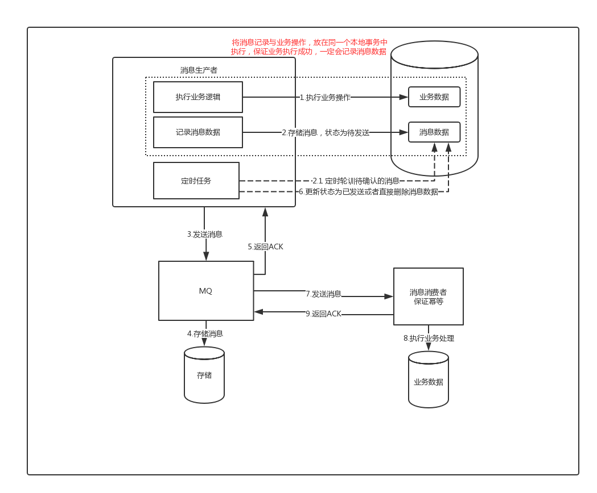

分布式事务——消息最终一致性方案(转)
前言
随着分布式服务架构的流行与普及，原来在单体应用中执行的多个逻辑操作，现在被拆分成了多个服务之间的远程调用。虽然服务化为我们的系统带来了水平伸缩的能力，然而随之而来挑战就是分布式事务问题，多个服务之间使用自己单独维护的数据库，它们彼此之间不在同一个事务中，假如A执行成功了，B执行却失败了，而A的事务此时已经提交，无法回滚，那么最终就会导致两边数据不一致性的问题；尽管很早之前就有基于两阶段提交的XA分布式事务，但是这类方案因为需要资源的全局锁定，导致性能极差；因此后面就逐渐衍生出了消息最终一致性、TCC等柔性事务的分布式事务方案，本文主要分析的是基于消息的最终一致性方案。
普通消息的处理流程
{kind=link}
img
普通消息处理流程.png
- 消息生成者发送消息
- MQ收到消息，将消息进行持久化，在存储中新增一条记录
- 返回ACK给消费者
- MQ push 消息给对应的消费者，然后等待消费者返回ACK
- 如果消息消费者在指定时间内成功返回ack，那么MQ认为消息消费成功，在存储中删除消息，即执行第6步；如果MQ在指定时间内没有收到ACK，则认为消息消费失败，会尝试重新push消息,重复执行4、5、6步骤
- MQ删除消息
普通消息处理存在的一致性问题
我们以订单创建为例，订单系统先创建订单(本地事务)，再发送消息给下游处理；如果订单创建成功，然而消息没有发送出去，那么下游所有系统都无法感知到这个事件，会出现脏数据；
1 | public void processOrder() { |
如果先发送订单消息，再创建订单；那么就有可能消息发送成功，但是在订单创建的时候却失败了，此时下游系统却认为这个订单已经创建，也会出现脏数据。
1 | public void processOrder() { |
一个错误的想法
此时可能有同学会想，我们可否将消息发送和业务处理放在同一个本地事务中来进行处理，如果业务消息发送失败，那么本地事务就回滚，这样是不是就能解决消息发送的一致性问题呢?
1 |
|
消息发送的异常情况分析
| 可能的情况 | 一致性 |
|---|---|
| 订单处理成功，然后突然宕机，事务未提交，消息没有发送出去 | 一致 |
| 订单处理成功，由于网络原因或者MQ宕机，消息没有发送出去，事务回滚 | 一致 |
| 订单处理成功，消息发送成功，但是MQ由于其他原因，导致消息存储失败，事务回滚 | 一致 |
| 订单处理成功，消息存储成功，但是MQ处理超时，从而ACK确认失败，导致发送方本地事务回滚 | 不一致 |
从上面的情况分析，我们可以看到，使用普通的处理方式，无论如何，都无法保证业务处理与消息发送两边的一致性，其根本的原因就在于：远程调用，结果最终可能为成功、失败、超时；而对于超时的情况，处理方最终的结果可能是成功，也可能是失败，调用方是无法知晓的。 笔者就曾经在项目中出现类似的情况，调用方先在本地写数据，然后发起RPC服务调用，但是处理方由于DB数据量比较大，导致处理超时，调用方在出现超时异常后，直接回滚本地事务，从而导致调用方这边没数据，而处理方那边数据却已经写入了，最终导致两边业务数据的不一致。为了保证两边数据的一致性，我们只能从其他地方寻找新的突破口。
事务消息
由于传统的处理方式无法解决消息生成者本地事务处理成功与消息发送成功两者的一致性问题，因此事务消息就诞生了，它实现了消息生成者本地事务与消息发送的原子性，保证了消息生成者本地事务处理成功与消息发送成功的最终一致性问题。
事务消息处理的流程
{kind=link}
img
事务消息处理流程.png
- 事务消息与普通消息的区别就在于消息生产环节，生产者首先预发送一条消息到MQ(这也被称为发送half消息)
- MQ接受到消息后，先进行持久化，则存储中会新增一条状态为
待发送的消息 - 然后返回ACK给消息生产者，此时MQ不会触发消息推送事件
- 生产者预发送消息成功后，执行本地事务
- 执行本地事务，执行完成后，发送执行结果给MQ
- MQ会根据结果删除或者更新消息状态为
可发送 - 如果消息状态更新为
可发送，则MQ会push消息给消费者，后面消息的消费和普通消息是一样的
注意点：由于MQ通常都会保证消息能够投递成功，因此，如果业务没有及时返回ACK结果，那么就有可能造成MQ的重复消息投递问题。因此，对于消息最终一致性的方案，消息的消费者必须要对消息的消费支持幂等，不能造成同一条消息的重复消费的情况。
事务消息异常情况分析
| 异常情况 | 一致性 | 处理异常方法 |
|---|---|---|
| 消息未存储，业务操作未执行 | 一致 | 无 |
存储待发送消息成功，但是ACK失败，导致业务未执行(可能是MQ处理超时、网络抖动等原因) |
不一致 | MQ确认业务操作结果，处理消息(删除消息) |
存储待发送消息成功，ACK成功，业务执行(可能成功也可能失败)，但是MQ没有收到生产者业务处理的最终结果 |
不一致 | MQ确认业务操作结果，处理消息(根据就业务处理结果，更新消息状态，如果业务执行成功，则投递消息，失败则删除消息) |
业务处理成功，并且发送结果给MQ，但是MQ更新消息失败，导致消息状态依旧为待发送 |
不一致 | 同上 |
支持事务消息的MQ
现在目前较为主流的MQ，比如ActiveMQ、RabbitMQ、Kafka、RocketMQ等，只有RocketMQ支持事务消息。据笔者了解，早年阿里对MQ增加事务消息也是因为支付宝那边因为业务上的需求而产生的。因此，如果我们希望强依赖一个MQ的事务消息来做到消息最终一致性的话，在目前的情况下，技术选型上只能去选择RocketMQ来解决。上面我们也分析了事务消息所存在的异常情况，即MQ存储了待发送的消息，但是MQ无法感知到上游处理的最终结果。对于RocketMQ而言，它的解决方案非常的简单，就是其内部实现会有一个定时任务，去轮训状态为待发送的消息，然后给producer发送check请求，而producer必须实现一个check监听器，监听器的内容通常就是去检查与之对应的本地事务是否成功(一般就是查询DB)，如果成功了，则MQ会将消息设置为可发送，否则就删除消息。
常见的问题
问：如果预发送消息失败，是不是业务就不执行了？
答：是的，对于基于消息最终一致性的方案，一般都会强依赖这步，如果这个步骤无法得到保证，那么最终也 就不可能做到最终一致性了。
问：为什么要增加一个消息
预发送机制，增加两次发布出去消息的重试机制，为什么不在业务成功之后，发送失败的话使用一次重试机制？答：如果业务执行成功，再去发消息，此时如果还没来得及发消息，业务系统就已经宕机了，系统重启后，根本没有记录之前是否发送过消息，这样就会导致业务执行成功，消息最终没发出去的情况。
如果consumer消费失败，是否需要producer做回滚呢？
答：这里的事务消息，producer不会因为consumer消费失败而做回滚，采用事务消息的应用，其所追求的是高可用和最终一致性，消息消费失败的话，MQ自己会负责重推消息，直到消费成功。因此，事务消息是针对生产端而言的，而消费端，消费端的一致性是通过MQ的重试机制来完成的。
如果consumer端因为业务异常而导致回滚，那么岂不是两边最终无法保证一致性?
答：基于消息的最终一致性方案必须保证消费端在业务上的操作没障碍，它只允许系统异常的失败，不允许业务上的失败，比如在你业务上抛出个NPE之类的问题，导致你消费端执行事务失败，那就很难做到一致了。
由于并非所有的MQ都支持事务消息，假如我们不选择RocketMQ来作为系统的MQ，是否能够做到消息的最终一致性呢？答案是可以的。
基于本地消息的最终一致性

基于本地消息最终一致性.png
{kind=link}
基于本地消息的最终一致性方案的最核心做法就是在执行业务操作的时候，记录一条消息数据到DB，并且消息数据的记录与业务数据的记录必须在同一个事务内完成，这是该方案的前提核心保障。在记录完成后消息数据后，后面我们就可以通过一个定时任务到DB中去轮训状态为待发送的消息，然后将消息投递给MQ。这个过程中可能存在消息投递失败的可能，此时就依靠重试机制来保证，直到成功收到MQ的ACK确认之后，再将消息状态更新或者消息清除；而后面消息的消费失败的话，则依赖MQ本身的重试来完成，其最后做到两边系统数据的最终一致性。基于本地消息服务的方案虽然可以做到消息的最终一致性，但是它有一个比较严重的弊端，每个业务系统在使用该方案时，都需要在对应的业务库创建一张消息表来存储消息。针对这个问题，我们可以将该功能单独提取出来，做成一个消息服务来统一处理，因而就衍生出了我们下面将要讨论的方案。
独立消息服务的最终一致性
{kind=link}
img
独立消息服务最终一致性.png
独立消息服务最终一致性与本地消息服务最终一致性最大的差异就在于将消息的存储单独地做成了一个RPC的服务，这个过程其实就是模拟了事务消息的消息预发送过程，如果预发送消息失败，那么生产者业务就不会去执行，因此对于生产者的业务而言，它是强依赖于该消息服务的。不过好在独立消息服务支持水平扩容，因此只要部署多台，做成HA的集群模式，就能够保证其可靠性。在消息服务中，还有一个单独地定时任务，它会定期轮训长时间处于待发送状态的消息，通过一个check补偿机制来确认该消息对应的业务是否成功，如果对应的业务处理成功，则将消息修改为可发送，然后将其投递给MQ；如果业务处理失败，则将对应的消息更新或者删除即可。因此在使用该方案时，消息生产者必须同时实现一个check服务，来供消息服务做消息的确认。对于消息的消费，该方案与上面的处理是一样，都是通过MQ自身的重发机制来保证消息被消费。
转自：
分布式事务——消息最终一致性方案 - 简书 (jianshu.com)
面试官杠上消息队列？重复消费、消息堆积、消息丢失、顺序消息…
什么，这么多问题啊！别慌，现在就来找找解决方案。
注 意
文末有：互联网大厂面试题、架构师项目实战视频等福利
一、 重复消费
现在消息队列一般都能保证at least once的，也就是消息至少一次投递。在这种情况为什么会出现重复消费的问题呢？通常都是由于网络原因造成的，原因如下：通常消息被成功消费后消费者都会发送一个成功标志给MQ，MQ收到这个标志就表示消息已经成功消费了，就不会再发送给其他消费者了。但是如果因为网络这个标志没有送到MQ就丢失了，MQ就认为这个消息没有被成功消费，就会再次发送给其他消费者消费，就造成重复了。
这时我们看这个问题就变成了我们怎么保证消费端的幂等性。
幂等性 是指一个操作其执行任意多次所产生的影响均与一次执行的影响相同，大白话就是你同样的参数调用我这个接口，调用多少次结果都相同。
怎么保证消息队列消费的幂等性
其实还是得结合业务来思考，我这里给出几个解决方案：
1. 分布式锁。生产者发送每条数据的时候，里面加一个全局唯一的 id，类似订单 id 之类的东西，然后你这里消费到了之后，先根据这个 id 去比如 Redis 里查一下，之前消费过吗？如果没有消费过，你就处理，然后这个 id 写 Redis。如果消费过了，那你就别处理了，保证别重复处理相同的消息即可。
2.唯一键防重。基于数据库的唯一键来保证重复数据不会重复插入多条。因为有唯一键约束了，重复数据插入只会报错，不会导致数据库中出现脏数据。
3.先查后写。要写数据库前，先根据主键查一下，如果这数据都有了，你就别插入了，update一下好了。
4. 关闭重试机制。如果把重试机制关掉的话不显示，虽然解决了重复消费的问题，但是可能会造成丢失消息，不建议这么做。
不同的业务可以选择不同的方案，如果服务的并发量不高，可以考虑唯一键防重或者先查后写的方案；如果并发量较高，追求性能，沐子推荐采用分布式锁实现幂等性（本公司目前采用的方案）
二、 消息堆积
1. 消息堆积的产生原因
消息堆积的原因主要在于两方面，其一为消费的太慢或消费方出现异常，其二为生产方生产的太快，总的来说就是消息的速度赶不上生产的速度，生产和消费速度不匹配造成的。
2. 消息堆积的解决方案
1）生产端：一般当生产端发生积压（Broker正常的情况下）就要查看你的业务逻辑是否有异常的耗时步骤导致的，是否需要改并行化操作等。
Broker端：当Broker端发生积压我们首先要查看，消息队列内存使用情况，如果有分区的的话还得看每个分区积压的消息数量差异。当每个分区的消息积压数据量相对均匀的话，我们大致可以认为是流量激增。需要在消费端做优化，或者同时需要增加Broker节点（相当于存储扩容），如果分区加压消息数量差异很大的话（有的队列满了，有的队列可能还是空闲状态），我们这时候就要检查我们的路由转发规则是否合理。
2） 增加消费者，多部署几台消费者机器（横向扩展），提升消费者的消费能力。
3）此种情况可以将这些消费不成功的消息转发到其它队列里去(类似死信队列)，后面再慢慢分析死信队列里的消息处理问题。
\4) mq 中的消息过期失效了。可以采取一个方案，就是批量重导，这个我们之前线上也有类似的场景干过。就是大量积压的时候，我们当时就直接丢弃数据了，然后等过了高峰期以后，将丢失的那批数据，写个临时程序，一点一点的查出来，然后重新灌入 mq 里面去，把白天丢的数据给他补回来。
总之，上面说到消息积压的问题，我们需要查看是否有无限重发的消息或者有进入死锁的程序等等，当确定是流量激增的话，我们需要评估是否需要增加资源还是通过限流的方式解决，当短时间大量消息需要处理时，在资源允许的情况下，我们可以新启一批消费者与消息队列，将原来的消费者中的消息直接作为生产者转发到临时应急队列中，这样大概率的能够快速解决消息积压。与其事后处理不如我们在设计之初就要把积压考虑进来，对于数据量非常大，但是实时性要求不高的场景，可以设计出批量消息发送，当队列积累到一定阀值再做批量消费消费，这里需要注意的就是重复消费带来的影响，设计不好就是一场灾难。
三、 消息丢失
一般来讲消息丢失的途径有三个：生产者弄丢数据、消息队列弄丢数据、消费者弄丢数据。
1. 生产者弄丢数据
a、丢失的原因：因为网络传输的不稳定性，当生产者在向MQ发送消息的过程中，MQ没有成功接收到消息，但是生产者却以为MQ成功接收到了消息，不会再次重复发送该消息，从而导致消息的丢失。
b、解决办法：有两个解决办法，第一个方法：向broker发送消息时，如果由于网络抖动等原因导致消息发送失败，可以设置失败重试次数让消息重发。
第二个方法：
事务机制和confirm机制，最常用的是confirm机制；
事务机制和
confirm 机制最大的不同在于，事务机制是同步的，你提交一个事务之后会阻塞在那儿，但是 confirm
机制是异步的，你发送个消息之后就可以发送下一个消息，然后那个消息 MQ 接收了之后会异步回调你的一个接口通知你这个消息接收到了。
2. MQ弄丢数据
a、丢失的原因：MQ接收到生产者发送过来的消息，是存在内存中的，如果没有被消费完，此时MQ宕机了，那么再次启动的时候，原来内存中的那些消息都丢失了。
b、解决办法：开启MQ的持久化。结合上面的说到的confirm机制，只有当消息成功持久化磁盘之后，才会回调生产者的接口返回ack消息，否则都算失败，生产者会重新发送。存入磁盘的消息不会丢失，就算MQ挂掉了，重启之后，他会读取磁盘中的消息，不会导致消息的丢失。
注意，哪怕是你给 MQ 开启了持久化机制，也有一种可能，就是这个消息写到了MQ 中，但是还没来得及持久化到磁盘上，结果不巧，此时MQ挂了，就会导致内存里的一点点数据丢失。
所以，持久化可以跟生产者那边的 confirm 机制配合起来，只有消息被持久化到磁盘之后，才会通知生产者 ack 了，所以哪怕是在持久化到磁盘之前，MQ 挂了，数据丢了，生产者收不到 ack，你也是可以自己重发的。
3. 消费者弄丢数据
a、丢失的原因：如果MQ成功的把消息发送给了消费者，那么MQ的ack机制会自动的返回成功，表明发送消息成功，下次就不会发送这个消息。但如果就在此时，消费者还没处理完该消息，然后宕机了，那么这个消息就丢失了。
b、解决的办法：1）简单来说，就是必须关闭 MQ 的自动提交，把自动提交改为手动提交，也就是说当我消费成功后才会进行提交。
{kind=link}
image-20220221020121786
2）消费者端已经正常接收到消息但是在执行后续消息处理时发生了异常，最终返回处理失败。重试-进行重新消费问题，如果一直这样重复消费都持续失败到一定次数，可以投递到 DLQ 死信队列，应用可以监控死信队列来做人工干预。
四、 顺序消费
比如一个电商的下单操作，下单后先减库存然后生成订单，这个操作就需要顺序执行的。队列本身是有顺序的，但是为什么还要保证顺序消费呢，主要是因为生产环境服务实例一般都是集群，当消费者是多个实例时，队列中的消息会分发到所有实例进行消费（同一个消息只能发给一个消费者实例），这样就不能保证消息顺序的消费，因为你不能确保哪台机器执行消费端业务代码的速度快。
保证每次只有单个消费实例消费
所以对于需要保证顺序消费的业务，我们可以只部署一个消费者实例，然后设置MQ 每次只推送一个消息，再开启手动 ack 即可。这样MQ 每次只会从队列推送一个消息过来，处理完成之后我们 ack 回应，再消费下一个，就能确保消息顺序性。
这样MQ 每次只会从队列推送一个消息过来，处理完成之后我们 ack 回应，再消费下一个，就能确保消息顺序性。
但是这样的操作也会降低消费者的性能，一个消费者消费消息时，其他消费者会阻塞，所以很多场景下可能并不会采用这样的方案。
所以一般会根据场景，制定一定的策略来解决消费顺序问题。
多线程并发抢占出现消费乱序问题
当MQ采用简单队列模式的时候,如果消费者采用多线程的方式来加速消息的处理,此时也会出现消息乱序的问题。
多线程并发抢占出现消费乱序问题，将消息ID进行hash计算，将相同值放入同一个内存队列，让指定线程执行，即可解决顺序消费问题。
在多个分区中保证消息顺序和消息处理效率
首先使用多个分区，消息可以被发送端发送至多个分区，保证消息发送的效率。然后在消费端在拉消息时使用ConutdownLunch来记录一组有序消息的个数。如果达到个数，说明已拉取到完整的一组有序消息。然后在消费端根据消息序号进行排序，消费端将排好序的消息发到内存队列(可以搞多个)，一个内存队列开启一个线程顺序处理消息。即可最大程度上既保证顺序又保证效率！
{kind=link}
image-20220221020157000
RocketMQ作为阿里开源的一款高性能、高吞吐量的消息中间件，支持顺序消息，所以如果有这种场景或者要使用MQ，小编建议你直接使用RocketMQ即可。
我们说了一些处理与分析问题的方法，这里有一个最重要的点就是我们需要有一套实用的监控发现工具或者方式，在问题第一时间发现才是王道，不然我们上面所说的都空谈，当问题发现的时候损失已经无法挽回。所以我们要在设计系统之初需要要为监控系统或者程序提供完备或者必须的日志，接口，数据等，这要才是一个合理的设计。当没有监控系统的情况下我们必须自己设计一套简单分析接口。
作者：首席架构师专栏
链接：https://www.jianshu.com/p/5db930b2071b